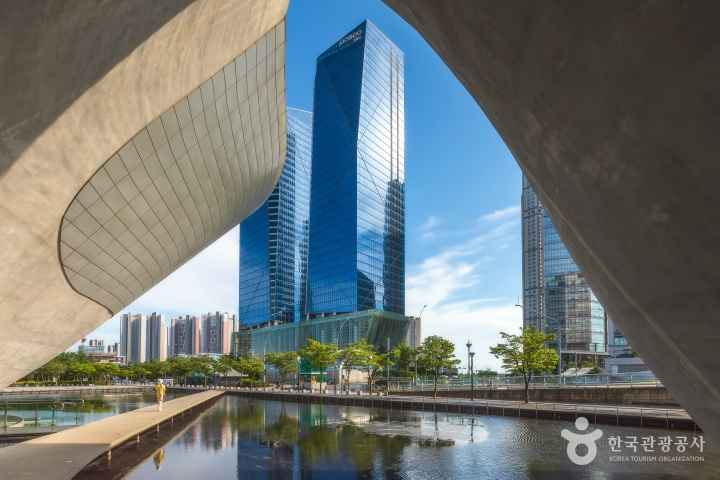
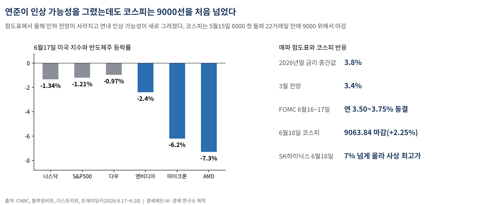
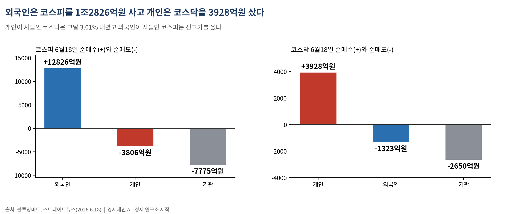
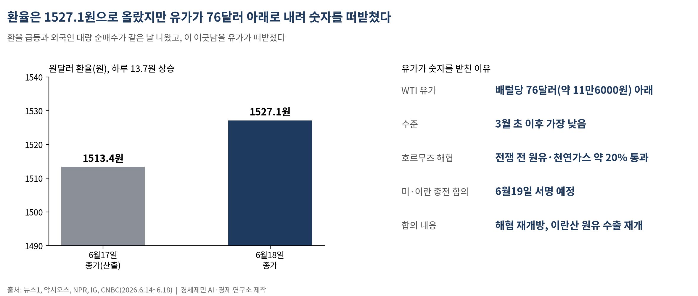
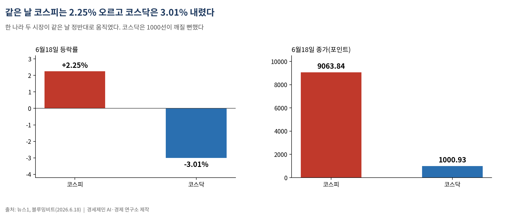
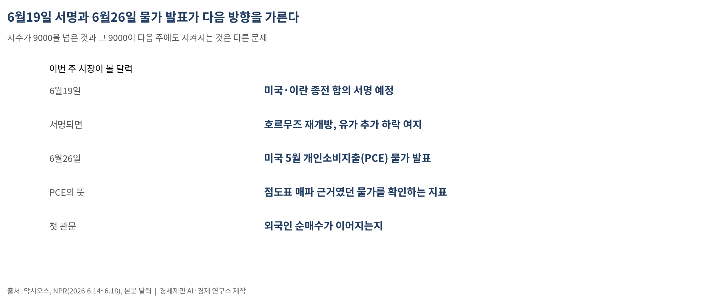

[주식공부] 코스피 9000 첫 돌파한 날, 코스닥은 3% 무너졌다
외국인 1조2826억 반도체 쓸어담아 9063.84 마감, 같은 날 개미는 떨어지는 코스닥을 3928억 순매수… 지수 신고가가 모두의 신고가는 아니다

6월18일 코스피가 사상 처음으로 9000선 위에서 장을 마쳤다. 전 거래일보다 2.25%(199.60포인트) 오른 9063.84에 마감했다(뉴스1·블루밍비트). 5월15일 8000을 처음 넘은 지 22거래일 만이다(트레이딩키).
그런데 같은 날 코스닥은 거꾸로 갔다. 코스닥은 3.01% 내린 1000.93에 마감했다(블루밍비트). 한 나라 두 시장이 같은 날 정반대로 움직였다. 신고가 헤드라인은 코스피 한 줄뿐이었지만, 그날 실제로 오른 시장은 둘 중 하나였다.
1. 매파 연준을 코스피가 무시한 날

코스피의 9000 돌파가 더 놀라운 이유는 전날 미국에서 날아온 소식 때문이다. 6월16~17일 미국 연방공개시장위원회(FOMC)는 기준금리를 연 3.50~3.75%로 동결했지만, 함께 공개한 점도표(dot plot, 연준 위원들이 적정 금리를 점으로 찍어 모은 전망표)에서 올해 인하 전망을 통째로 지우고 거꾸로 연내 인상 가능성을 새로 그려 넣었다. 2026년말 금리 중간값은 3.8%로, 3월 전망 3.4%보다 올라갔다(CNBC·블루밍비트). 금리를 '내릴 것'이라던 시장의 기대가 '올릴 수도 있다'로 뒤집힌 것이다.
미국 증시는 그 자리에서 밀렸다. 6월17일 나스닥은 1.34%, S&P500은 1.21%, 다우는 0.97% 내렸다(더스트리트). 금리에 가장 민감한 반도체가 특히 빠졌다. 엔비디아는 2.4%, 마이크론은 6.2%, AMD는 7.3% 내렸다(더스트리트). 금리를 높게 오래 두면, 먼 미래의 이익을 끌어다 값을 매기는 성장주가 가장 먼저 눌린다.
코스피는 이 매파 신호를 정면으로 받고도 올랐다. 동력은 거시가 아니라 한 기업의 소식이었다. SK하이닉스가 6월18일 7% 넘게 올라 사상 최고가를 새로 썼다. 인공지능 반도체에 들어가는 차세대 고대역폭메모리 'HBM4E'(High Bandwidth Memory·여러 메모리 칩을 수직으로 쌓아 데이터를 빠르게 주고받게 만든 반도체)의 12단 샘플을 주요 고객사에 출하했다는 소식이 나왔다(서울경제·인베스팅닷컴). 미국 반도체가 금리에 눌린 것과, 한국 반도체가 제 호재로 오른 것은 같은 주의 다른 숫자다.
2. 누가 무엇을 샀나 — 외국인은 코스피, 개미는 코스닥

코스피 9000을 만든 손은 외국인이었다. 6월18일 유가증권시장(코스피)에서 외국인은 1조2826억원을 순매수해 지수를 끌어올렸다. 같은 날 개인은 3806억원, 기관은 7775억원을 순매도했다(블루밍비트·스트레이트뉴스). 대형 반도체주를 외국인이 쓸어담는 동안, 개인은 오르는 코스피를 팔고 있었다.
코스닥은 정반대였다. 코스닥에서 개인은 3928억원을 순매수했고, 외국인은 1323억원, 기관은 2650억원을 순매도했다(블루밍비트). 개인이 사들인 코스닥은 그날 3.01% 내렸다. 외국인이 사들인 코스피는 신고가를 썼고, 개인이 사들인 코스닥은 1000선이 깨질 뻔했다. 같은 날, 누가 무엇을 샀느냐가 그대로 다른 결과로 이어졌다.
이 그림은 한 번으로 끝나지 않는다. 지난주 폭락도, 이번 주 신고가도 방향을 정한 손은 외국인이었다. 6월12일 코스피 8000 회복을 만든 것도 25거래일 만에 돌아온 외국인 순매수였다. 지수를 움직이는 손과, 헤드라인을 읽고 따라 들어가는 손은 다른 자리에서 시작한다.
3. 환율 1527원과 코스피 9000은 같은 날 숫자다

매파 FOMC는 달러를 끌어올렸다. 6월18일 원달러 환율은 13.7원 오른 1527.1원에 마감했다(뉴스1). 환율이 오른다는 것은 원화 값이 떨어진다는 뜻이고, 보통은 외국인 자금이 빠져나갈 신호로 읽힌다. 그런데 이날 외국인은 1조원 넘게 사들였다. 환율 급등과 외국인 대량 순매수가 같은 날 함께 나온 것이다.
이 어긋남을 떠받친 건 유가다. 미국과 이란의 종전 합의가 6월19일 서명될 예정이고, 합의에는 호르무즈 해협 재개방과 이란산 원유 수출 재개가 담겼다(악시오스·NPR). 전쟁 전 세계 원유와 천연가스의 약 20%가 지나던 길목이다. 서부텍사스원유(WTI)는 배럴당 76달러(약 11만6000원) 아래로, 3월 초 이후 가장 낮은 수준까지 내렸다(IG·CNBC). 유가가 내리면 수입물가가 내리고, 물가가 잡히면 한국 기업의 원가 부담이 줄어든다. 금리·달러가 오른 것과 유가가 내린 것은 같은 밤의 숫자였고, 이번엔 유가 쪽이 셌다.
미국 밖도 비슷한 결을 탔다. 6월17일 중국 상하이종합지수는 0.4% 오른 4108에 마감했고(트레이딩이코노믹스), 일본 증시는 기술주 강세에 사상 최고가 부근에 머물렀다. 같은 호재와 같은 악재 앞에서도 시장마다 표정은 갈렸다.
4. 초보가 챙길 두 개념 — '코스피와 코스닥', 그리고 '수급'

이번 주에 외울 개념 둘.
하나는 코스피와 코스닥의 차이다. 코스피(KOSPI)는 삼성전자·SK하이닉스 같은 큰 기업이 모인 대형 우량주 시장이고, 코스닥(KOSDAQ)은 중소·벤처·기술 기업이 모인 시장이다. 미국으로 치면 코스피는 대형주 중심의 뉴욕증권거래소에, 코스닥은 기술·성장주 중심의 나스닥에 가깝다. 두 시장은 같은 나라 안에 있어도 주인공이 다르다. 그래서 외국인 돈이 대형 반도체로 쏠리면 코스피만 오르고 코스닥은 소외되는, 6월18일 같은 장면이 나온다. 지수가 신고가라는 말과 내 종목이 올랐다는 말은 다른 문제다.
다른 하나는 수급이다. 수급은 누가 사고(수요) 누가 파는가(공급)를 뜻한다. 한국 증시의 매매 주체는 크게 셋, 외국인·기관(연기금·운용사 등 큰손)·개인(개미)이다. 어느 주체가 사는지를 보면 그날 지수의 방향을 읽을 수 있다. 6월18일처럼 외국인이 대형주를 사고 개인이 그걸 팔면, 지수는 오르는데 개인의 계좌는 웃지 못하는 일이 벌어진다. 지수가 오르는 것과 내가 버는 것은 다른 문제이고, 그 사이를 가르는 게 수급의 방향이다.
여기에 숫자 하나를 붙여 둔다. 코스피가 9000을 넘었어도 코스피 선행 주가수익비율(forward PER·앞으로 1년 예상 이익 대비 주가가 몇 배인지 보는 잣대)은 여전히 미국 20배, 일본 16배, 대만·독일 10배 중반대보다 낮은 편이다(삼성증권, 직전 기준). 낮을수록 이익에 견줘 주가가 싸다는 뜻이다. 외국인이 9000에서도 1조원을 더 부은 한 이유가 여기 있다. 다만 지수가 싸다는 사실과 내가 산 종목이 싸다는 사실은 같지 않다.
5. 다가오는 주 — 서명 한 장과 물가 지표 하나

이번 주 시장이 볼 달력은 둘이다. 먼저 6월19일 미국과 이란의 종전 합의 서명이다. 예정대로 서명되고 호르무즈가 열리면 유가가 더 내려 물가·환율에 숨통이 트인다. 다음은 6월26일 발표될 미국 5월 개인소비지출(PCE) 물가다. 연준이 점도표를 매파로 그린 근거가 물가였던 만큼, 이 지표가 매파 전망을 뒷받침할지 반박할지가 다음 방향을 가른다.
코스피가 9000을 넘은 것과 그 9000이 다음 주에도 지켜지는 것은 다른 문제다. 외국인이 매수를 이어가는지, 매파 FOMC와 환율 부담을 시장이 계속 무시할 수 있는지가 첫 관문이다. 신고가 헤드라인을 읽는 일과, 그날 외국인·기관·개인이 무엇을 샀는지 수급표를 펴 보는 일은 다른 자리에서 시작한다.
─────────────────────
활용 AI: Claude Opus 4.8 (Anthropic)
참고문헌
뉴스1, "'매파 연준' 달러·원 환율 급등 1527.1원…코스피 9천 돌파(종합)", 2026.6.18, https://www.news1.kr/finance/general-stock/6201597
en.bloomingbit.io, "Kospi Closes Above 9,000 for First Time, Jumps 2.25% to 9,063.84", 2026.6.18, https://en.bloomingbit.io/feed/news/114505
en.bloomingbit.io, "Kospi Tops 9,000 as Stocks Brush Off Hawkish Fed Shift", 2026.6.18, https://en.bloomingbit.io/feed/news/114501
스트레이트뉴스, "코스피 9000 시대 열렸다…외국인 1.2조 순매수", 2026.6.18, https://www.straightnews.co.kr/news/articleView.html?idxno=305114
TradingKey, "Nikkei 225 Breaks 71,000 for First Time, Kospi Tops 9,000, SK Hynix Rises More Than 7% to Record High", 2026.6.18, https://www.tradingkey.com/analysis/stocks/more/261975192-kospi-samsung-skhynix-dram-mu-hbm4e-tradingkey
서울경제(en), "SK hynix Ships HBM4E Samples, Intensifies Rivalry With Samsung", 2026.6.18, https://en.sedaily.com/finance/2026/06/18/sk-hynix-ships-hbm4e-samples-intensifies-rivalry-with
TheStreet, "Stock Market Today (June 17, 2026): S&P 500, Nasdaq plummet as Fed meeting points to rate hike in late 2026", 2026.6.17, https://www.thestreet.com/stock-market-today/stock-market-today-dow-jones-sp-500-nasdaq-updates-june-17-2026
CNBC, "Oil prices: WTI, Brent on proposed U.S.-Iran deal", 2026.6.12, https://www.cnbc.com/2026/06/12/oil-prices-wti-brent-on-hopes-of-us-iran-deal-despite-tehran-pushback.html
Axios, "Oil prices fall on US, Iran deal announcement", 2026.6.14, https://www.axios.com/2026/06/14/oil-prices-us-iran-war-hormuz-strait-peace-deal
IG International, "US-Iran June deal: oil price outlook and key levels", 2026.6.16, https://www.ig.com/en/news-and-trade-ideas/oil-falls-on-us-iran-deal-260616
Trading Economics, "China Shanghai Composite Stock Market Index", 2026.6.17, https://tradingeconomics.com/china/stock-market
주식공부 #코스피9000 #코스닥급락 #외국인순매수 #수급 #SK하이닉스 #HBM4E #매파FOMC #점도표 #미이란합의